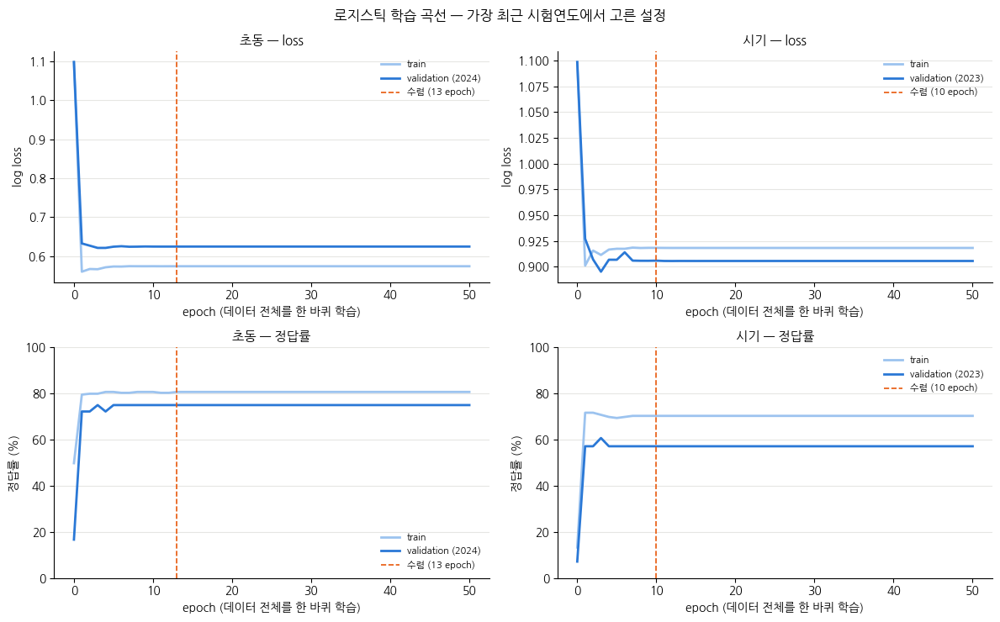
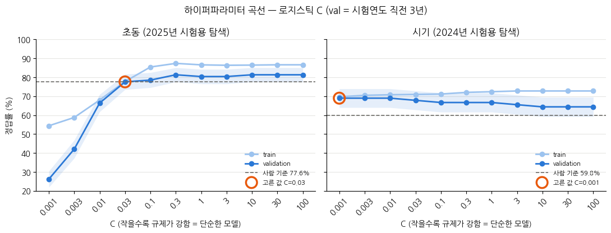
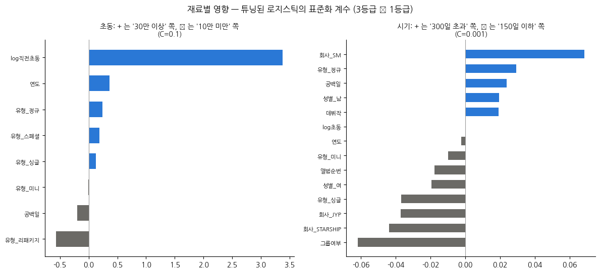

맞음초동
엔믹스 Strange Muse
- ours 예측
- 실제
- 349,988장
- 베이스라인모델(휴리스틱)
- 맞음
그래프의 막대나 점에 마우스를 올리거나 탭하면 자세한 숫자가 나옵니다. 장 번호는 노트북의 장 번호입니다.
이 숫자는 ours(스태킹 앙상블: 후보 모델 7개를 섞음)을 중첩 시계열 교차검증으로 확인한 결과입니다 (초동 274문제, 시기 208문제). 베이스라인모델(휴리스틱, 사람의 예측 방식을 규칙으로 만든 기준 모델): 초동은 설문 70명이 '주로 본 것'을 응답 비율대로 섞은 모델, 시기는 직전 공백 그대로입니다.
이 페이지의 ours(스태킹 앙상블)은 후보 모델 7개(나무, 로지스틱, 순서형, SVM, KNN, 랜덤포레스트, 그래디언트 부스팅)를 학습시키고, 메타 로지스틱이 '어느 모델을 얼마나 믿을지' 배워서 섞는 스태킹입니다 (노트북 8~10장). 0번(실전 예측)은 2026년용 최종 모델의 결과입니다.
학습 데이터에 없는 2026년 앨범으로 최종 모델을 확인했습니다. 4건 중 2건을 맞혔고, 베이스라인모델(휴리스틱)도 같은 2건만 맞혔습니다. 컴백 시기는 직전 앨범이 나온 시점에서 예측한 것입니다. 1페이지에서 같은 앨범을 눌러 보면 똑같은 예측이 나옵니다.
왜 틀렸나: 리센느는 데이터에 없는 회사(더뮤즈)라 회사 정보 없이 예측했습니다. 직전 10.4만의 5.8배가 팔렸는데, 유튜브로 쌓인 화제성이 음반 구매로 옮겨간 결과라는 풀이가 있습니다 (iMBC). 엑셀에 없는 요인입니다.
왜 틀렸나: lip bomb과 PULSE 사이에 디지털 싱글 활동이 있었습니다. 데이터는 실물 앨범만 세서 공백이 343일로 잡혔습니다.
| 앨범 | 다음 컴백 예측 |
|---|---|
| 엔믹스 Strange Muse (2026-10-19) | |
| 리센느 PULSE (2026-11-03) |
시기 예측에는 스페셜·리패키지를 뺀 기준의 직전 발매일과 앨범 순번을 넣습니다.
시기 테스트에서 2025년은 뺍니다. 다음 앨범이 이미 나온 2025년 앨범은 빨리 컴백한 경우뿐이라 치우치기 때문입니다.
앨범 하나가 점 하나입니다 (점 개). 가로가 직전 앨범, 세로가 이번 앨범 초동이고, 점선은 10만·30만 경계, 회색 대각선은 '직전과 똑같이 팔림'입니다. 78.4%가 직전과 같은 등급이라 직전을 따라가는 방식이 이미 강합니다.
주황 점 = 직전 앨범이 리패키지인 앨범 (개). 대부분 대각선 위에 있습니다 → 리패키지 다음에는 더 팔리는 경우가 많습니다 (5번). 위 범례를 누르면 그 묶음을 끄고 켤 수 있습니다.
행이 정답, 열이 ours 예측입니다. 파란 대각선이 맞힌 칸, 주황 칸이 틀린 칸이고 진할수록 많습니다.
ours가 사람을 확실히 이기는 경우입니다. 리패키지는 팬이 이미 원본을 사서 덜 팔리므로, 그다음 앨범은 등급이 올라가는 경우가 많습니다 (41.7%). 베이스라인모델(휴리스틱)은 이 상승을 ours만큼 따라가지 못합니다.
실선 = 실제, 점선 = ours 예측. 테스트 연도마다 그 해 앨범 중 해당 등급의 비율입니다.
최근 k개(1~5) 초동 평균으로 예측해, 최종 모델(12장)과 같은 val(2023~25, 문제)로만 비교했습니다.
직전 1개만 볼 때 82.6%로 가장 높고, 최근 5개 평균은 76.1%입니다. 설문에서 사람들이 직전을 따라간 것이 데이터상으로도 가장 나은 단순 규칙입니다.
10문제 중 사람 평균 5.5개, 직전 규칙 6개를 맞혔습니다.
직전과 추세가 갈리는 문제에서 직전 쪽을 60%, 추세 쪽을 23% 골랐습니다. 그래서 베이스라인모델(휴리스틱)을 자기 보고가 아니라 실제 선택으로 정했습니다.
설문 설계와 이항검정 결과는 프로젝트 소개 5번에 있습니다.
test를 맞힐 때 재료 하나를 앨범끼리 섞으면 ours 정답률이 몇 %p 떨어지는지 쟀습니다 (50번 평균). 많이 떨어질수록 ours가 그 재료에 많이 기댄 것입니다. 모델 종류와 상관없이 같은 기준으로 잴 수 있습니다 (Breiman 2001).
막대 끝의 선은 50번 반복의 표준편차입니다. '(후보)'는 5묶음 후보 재료입니다.
설문 "주로 무엇을 보고 예상했나요?" (명)의 답을 두 가지로 봤습니다. 답한 대로는 사람들이 말한 비율이고, 실제 행동은 문제를 풀 때 실제로 고른 답이 어느 쪽과 맞았는지로 옮긴 비율입니다 ('흐름'이라고 답했지만 실제로는 직전 앨범을 따라간 사람은 '가장 최근 판매량'으로 옮겼습니다).
같은 정보를 담은 ours 재료와 짝지으면 아래 표와 같습니다. ours에는 '오르는 중인지'를 보는 재료가 없어서 '흐름'은 최근 2개 평균과 짝지었습니다.
후보 모델 7개의 답을 하나로 합치는 방법 4가지(1등 하나 / 시드 평균 / 상위 3개 평균 / 스태킹)를 같은 문제로 비교했습니다. 'val'은 한 해를 뺀 채 나머지 연도로 학습해 그 해를 맞힌 정답률이고, 'test'는 테스트 연도로 채점한 정답률입니다. 표시가 있는 줄이 최종 ours입니다.
chartData.js를 불러오지 못했습니다.
chartData.js를 불러오지 못했습니다.

img/learning_curve.png
img/c_curve.png
img/feature_effect.png